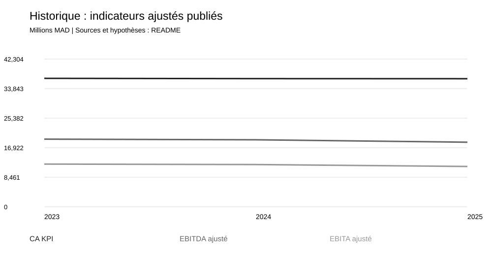
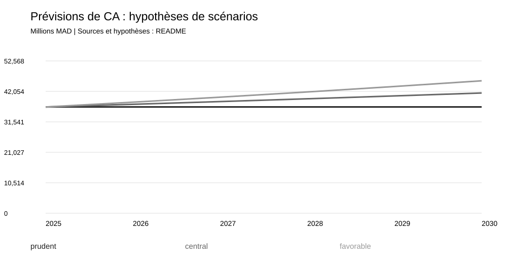
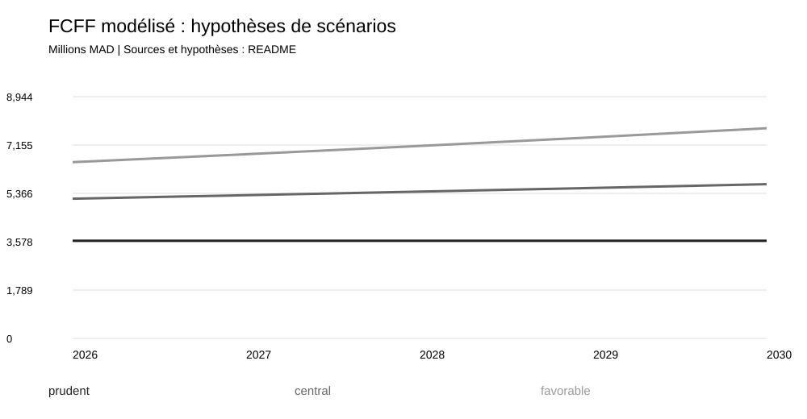

Unité : millions MAD. Modèle pédagogique, valorisation au 31/12/2025.
Le CA KPI varie de -0.29% entre 2023 et 2025. La marge EBITDA ajustée passe de 52.65% à 50.42%. Ce sont des calculs à partir de S1.
La progression du résultat IFRS 2025 ne représente pas une croissance récurrente : le litige Wana affecte les comparatifs (S2, p.24). La liquidité générale reste inférieure à 1; cela appelle une revue des échéances, sans suffire à diagnostiquer une cessation de paiement.
| Scénario | VE indicative | Part terminale |
| central | 65,687.6 | 68.8% |
| favorable | 107,254.2 | 74.3% |
| prudent | 33,354.0 | 60.5% |
La VE couvre les flux consolidés. Aucun cours cible ni valeur des capitaux propres de la société mère : les intérêts minoritaires devraient être valorisés au marché, les participations et les locations réconciliées avant un pont VE-actions. La valeur comptable des minoritaires ne constitue pas cette valorisation.
Trois observations annuelles ne permettent pas de valider statistiquement une prévision. Pas de backtest revendiqué. Prévisions figées sur base FY2025, sans intégrer les publications 2026 disponibles à la date de collecte; ce n’est pas une prévision en temps réel.
BFR proxy = stocks + créances et autres - dettes exploitation : périmètre large, distinct du BFR opérationnel normalisé utilisé en DCF. ROE calculé sur capitaux propres de clôture. FCF cash proxy = CFO - acquisitions cash + cessions, distinct du FCFF et du CFFO communiqué. Les investissements KPI ne sont pas les décaissements du tableau de flux.
Contrôles prioritaires : justification des écarts de publication, circularisation dette/banques, maturité des passifs courants, licences et CAPEX, événements non récurrents, recouvrabilité clients. Aucun avis d’audit émis.
Sources et traçabilité : data/raw/sources.csv et docs/data_dictionary.md.


